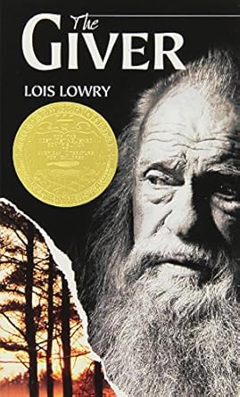

The The Giver by Lois Lowry
Purchase The Giver Here: Amazon or Barnes and Nobles
The Giver was a book that i really enjoyed in middle school. The society of the book is facinating in a sense that citizens can not feel pain, emotion, see color, know what animals were, yet one citizen could. This citizen was known as the giver and held these things in memories, that he would soon give to a kid named Jonas that's soon be the Reciever of Memory. Jonas then would start to see these expirences and color and the book starts to really evolve.
Always Forever by The Cults
Music Video: Always Forever